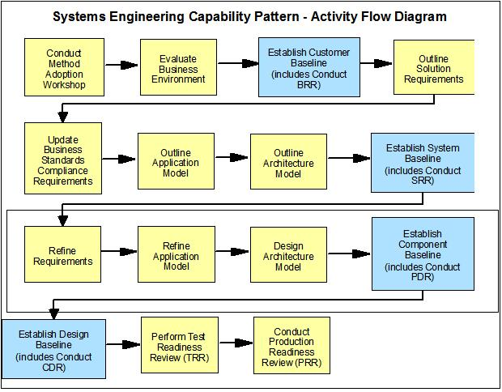
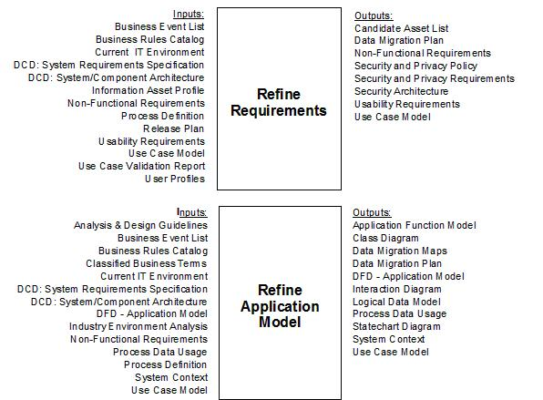
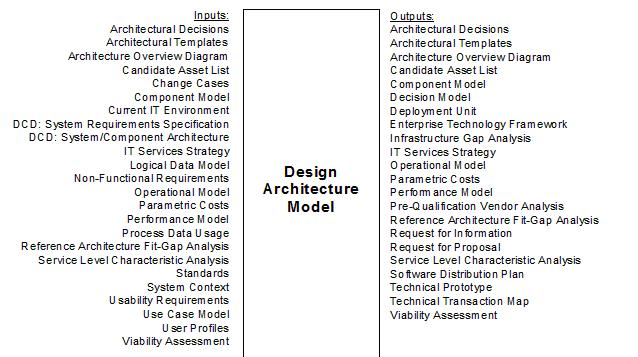
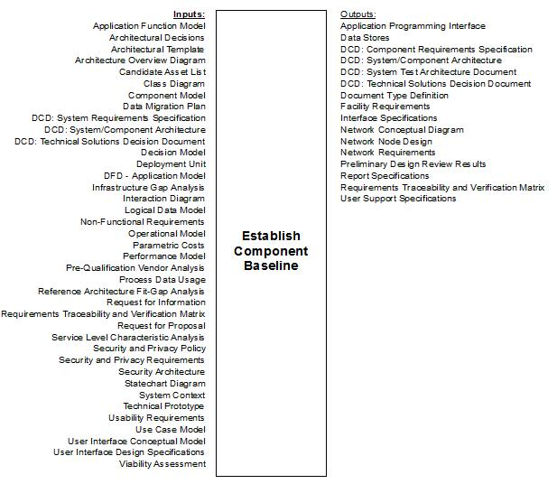

| Guideline: Performance Engineering Activities Supporting the Component Baseline |
 |
|
| Related Elements |
|---|
In an Enterprise SE&A project, the Component Baseline contains the component requirements for the system described in the System Baseline.
 In the SE Capability Pattern, a number of work products are developed before it is time to review the Component Baseline, as shown below:
   The performance engineering team has a vested interest in ensuring that the performance and capacity aspects of the system design are well-conceived and capable of meeting requirements. This will prove helpful to the later SE&A baselines as the components are designed, implemented, tested and deployed, which will in turn enhance the likelihood that the overall project will satisfy the customer’s requirements. Deliverables which are deemed deficient from a performance and capacity standpoint may lead to the entry of a defect, which is then taken into account during the PDR Scorecard process.
At this time, the PE team should be actively executing the elements of the PE plan. There may be a need for more
detailed plans covering specific aspects of the PE plan, such as estimation and modeling, performance testing, capacity
and performance management and so on. Since the responsibility for many of these plans will fall outside of the
PE and SE&A teams, careful coordination and teamwork is required to achieve synergy on the part of the extended PE
team. |
| Supporting Materials |
|---|
| © Copyright IBM Corp. 1987, 2012 All Rights Reserved Property of IBM These materials are intended only for use as part of an IBM engagement |